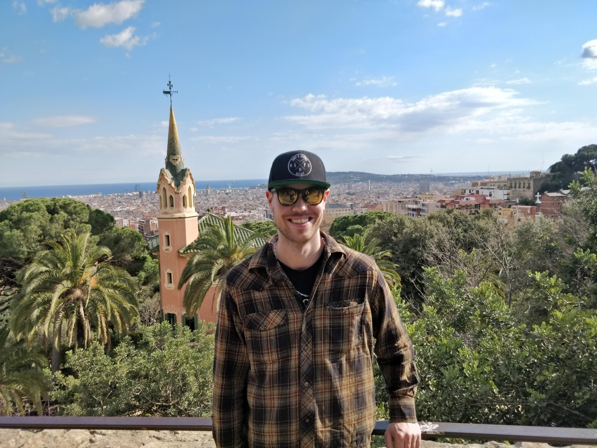
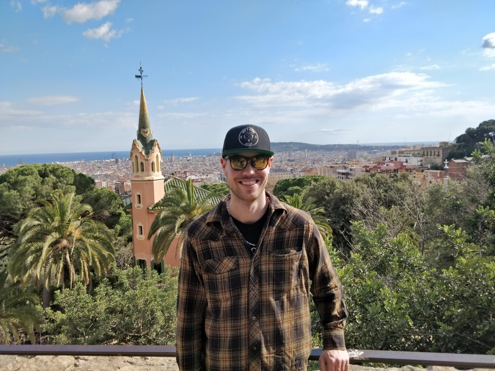

When I arrived in the fall of 2018 I really did not have a plan just a couple bags and my German passport. I had two nights booked in Frankfurt to get on my feet. I quickly met new friends at the hostel and swapped stories and plans. I decided to try and check out most of the German cities. So my next stop was Cologne. Then I would go to Hamburg, Berlin. I would do a bit of a loop around the country and see where I end up in a few weeks.
I arrived in Cologne and it did not take time for me to feel at home. I loved Cologne and the atmosphere there. I ended up living there after my initial travels. After Cologne I did Hamburg, Berlin, Dresden, Prague, Nuremberg then back to Cologne. After I settled in with a place and a job, it didn't take long to make good friends with the locals.
While I was living in Cologne I was able to do a few trips out of the country. I went back to Berlin for a few days to visit some friends from Canada that were over here. I went to Amsterdam but was only for 2 nights so that wasn't enough time. Amsterdam is an amazing place though, highly recommend it. The next one I went to was Brussels. I really liked Brussels, lots of tasty beer. I even did a beer tour. It was my syle of place with lots of culture and history to go with it. My favorite trip I did in Europe was to Barcelona. That was amazing. Amazing weather, amazing architecture and I met amazing people. I say over and over again that the people you meet really make the trip and that was true for this one.
 
